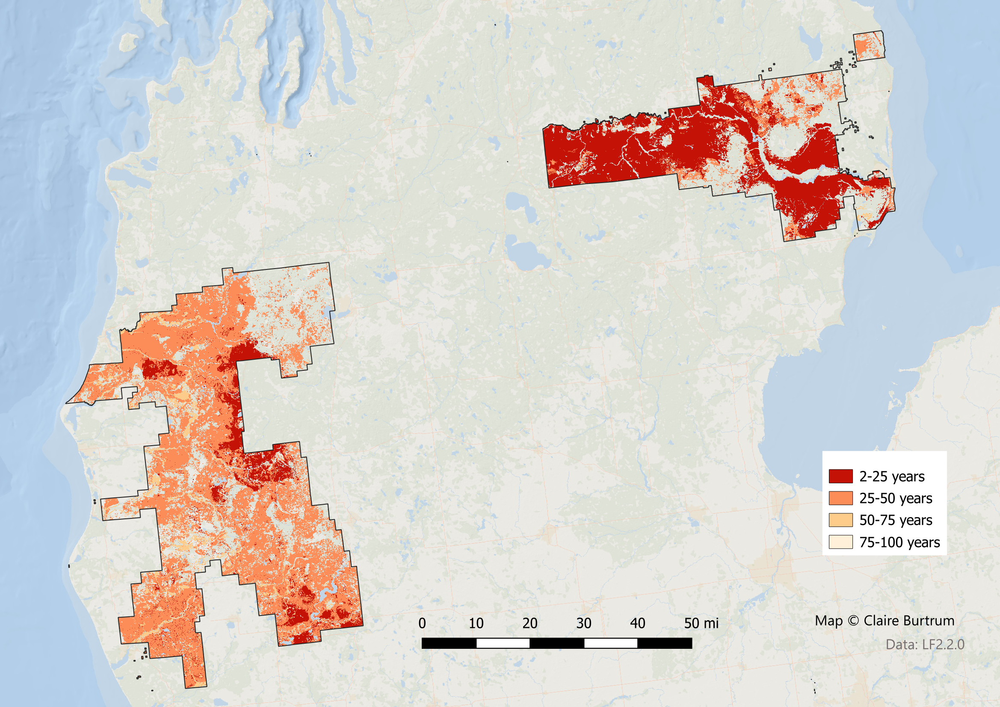

Past
LANDFIRE’s Biophysical Settings (BpSs, aka “Historical Ecosystems”) represent “the vegetation system that may have been dominant on the landscape prior to Euro-American settlement and is based on both the current biophysical environment and an approximation of the historical disturbance regime.” (from https://landfire.gov/bps.php). We will use this data to explore the most prevalent BpSs in a chart and map, and also the historical disturbance data that are linked to the BpSs.
Summary
- Pre-European colonization, the dominant vegetation system was Laurentian-Acadian Northern Pine/Oak Forest, with this system having the highest historic annual acres burned
- The most prevalent LANDFIRE Mean Fire Return Intervals (from BpS) were 2-25 and 25-50 years
Chart of most prevalent Biophysical Settings
Map of most prevalent Biophysical Settings

Chart of historic annual acres burned per ecosystem

Simplified map of historical fire regimes

All historical disturbances per ecosystem
Data table
| ZONE | BPS_MODEL | BPS_NAME | GROUPVEG | FRI_REPLAC | FRI_MIXED | FRI_SURFAC | FRG_NEW | ACRES | REL_PERCENT |
|---|---|---|---|---|---|---|---|---|---|
| 51 | 13620_51_63_64_65_66 | Laurentian-Acadian Northern Pine(-Oak) Forest | Hardwood-Conifer | 309 | 447 | 65 | III-A | 792,001 | 38.9 |
| 51 | 14071_41_50_51 | Laurentian Pine-Oak Barrens | Hardwood-Conifer | 109 | 75 | 5 | I-A | 351,016 | 17.3 |
| 51 | 13022_41_50_51 | Laurentian-Acadian Northern Hardwoods Forest-Hemlock | Hardwood | 2,040 | NA | NA | V-B | 329,316 | 16.2 |
| 51 | 14810_41_50_51_63 | Laurentian-Acadian Alkaline Conifer-Hardwood Swamp | Riparian | 989 | NA | NA | V-B | 172,343 | 8.5 |
| 51 | 13441_51 | Boreal Jack Pine-Black Spruce Forest-Pine Barrens | Conifer | 34 | 64 | 7 | I-A | 80,188 | 3.9 |
| 51 | 14750_41_50_51_63_64_65_66 | Laurentian-Acadian Floodplain Systems | Riparian | NA | 435 | 68 | III-A | 59,071 | 2.9 |
| 51 | 13022_41_50_51 | Laurentian-Acadian Northern Hardwoods Forest-Hemlock | Hardwood | 2,040 | NA | NA | V-B | 54,577 | 2.7 |
| 51 | 14072_41_50_51 | Laurentian Pine-Oak Barrens-Jack Pine | Conifer | 25 | 46 | 18 | I-B | 47,876 | 2.4 |
| NA | NA | Open Water | Open Water | NA | NA | NA | NA | 35,129 | 1.7 |
| 51 | 13660_51_63_64_65_66 | Laurentian-Acadian Pine-Hemlock-Hardwood Forest | Hardwood-Conifer | 482 | 998 | 289 | III-B | 20,584 | 1.0 |
| 51 | 14770_40_41_50_51 | Boreal Acidic Peatland Systems | Riparian | 716 | NA | 123 | III-B | 19,902 | 1.0 |
| 51 | 13652_51 | Boreal White Spruce-Fir-Hardwood Forest-Coastal | Conifer | 872 | 1,306 | NA | V-B | 16,840 | 0.8 |
| 51 | 13651_51 | Boreal White Spruce-Fir-Hardwood Forest-Inland | Conifer | 490 | 524 | NA | V-A | 12,627 | 0.6 |
| 51 | 14710_51_62 | Central Interior and Appalachian Floodplain Systems | Riparian | NA | 429 | 67 | III-A | 11,331 | 0.6 |
| 51 | 14440_41_50_51 | Eastern Boreal Floodplain | Hardwood | NA | 581 | 312 | V-A | 8,102 | 0.4 |
| 51 | 14120_39_40_41_42_43_50_51 | North-Central Interior Sand and Gravel Tallgrass Prairie | Grassland | 4 | NA | 87 | II-A | 5,453 | 0.3 |
| 51 | 14660_50_51 | Great Lakes Wooded Dune and Swale | Riparian | 3,715 | 536 | NA | V-A | 5,271 | 0.3 |
| 51 | 13110_51 | North-Central Interior Dry Oak Forest and Woodland | Hardwood | 137 | 111 | 11 | I-B | 3,801 | 0.2 |
| 51 | 14790_41_42_47_48_50_51_53 | Central Interior and Appalachian Swamp Systems | Riparian | 987 | NA | NA | V-B | 4,068 | 0.2 |
| 51 | 13130_47_50_51 | North-Central Interior Beech-Maple Forest | Hardwood | 1,004 | NA | 836 | V-A | 1,705 | 0.1 |
| NA | NA | Barren-Rock/Sand/Clay | Barren-Rock/Sand/Clay | NA | NA | NA | NA | 596 | 0.0 |
| 51 | 13100_51 | North-Central Interior Dry-Mesic Oak Forest and Woodland | Hardwood | 161 | 160 | 11 | I-B | 739 | 0.0 |
| 51 | 13442_51 | Boreal Jack Pine-Black Spruce Forest-Spruce-Fir | Conifer | 112 | NA | NA | IV-B | 788 | 0.0 |
| 51 | 14920_41_50_51_52_63 | Great Lakes Coastal Marsh Systems | Riparian | NA | NA | NA | NA | 75 | 0.0 |
| 51 | 14940_41_50_51 | Laurentian-Acadian Shrub-Herbaceous Wetland Systems | Riparian | 18 | NA | NA | II-C | 56 | 0.0 |